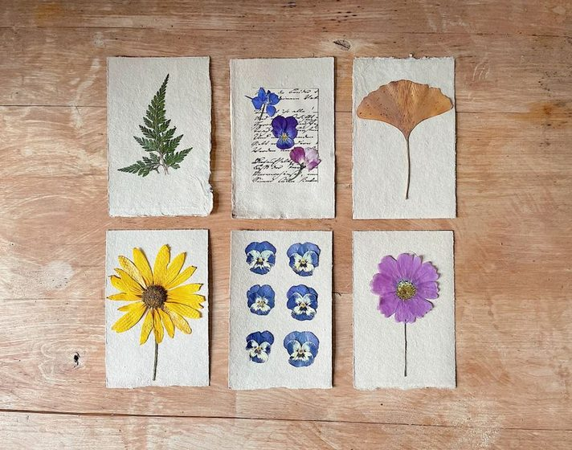
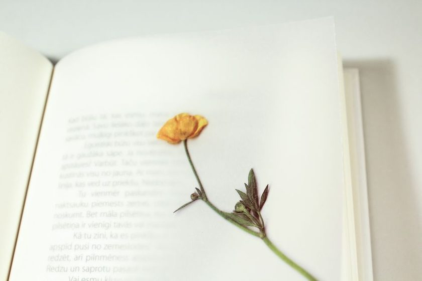
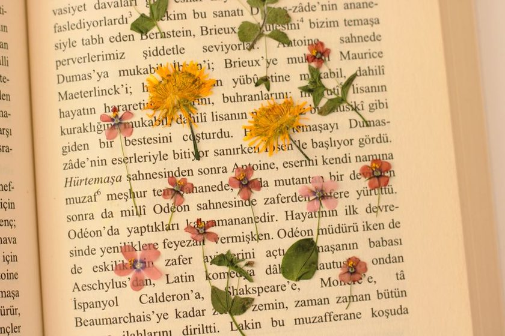
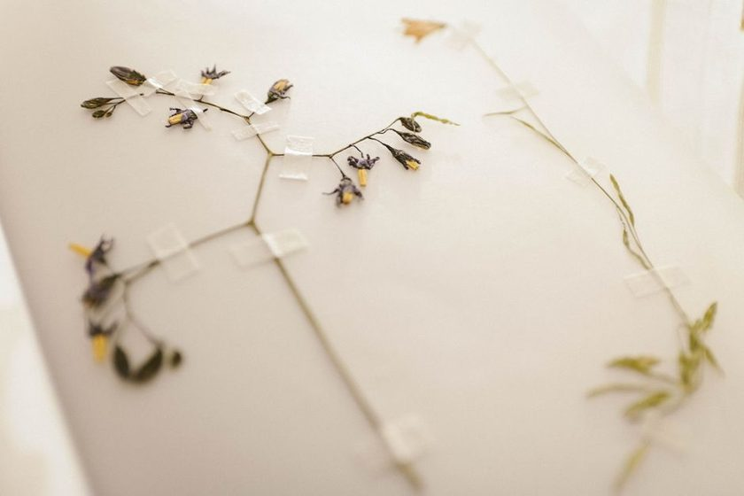

The Journal
Pressing without ruining it
Short, specific notes on herbarium practice — the humidity in the press, the day you change the blotters, and the minimum a label needs to say before a specimen means anything twenty years from now.
-

Fig. 1 Blotter stack, day twoThe Blotter-Change Interval
The single habit that separates a flat, true-colored sheet from a brown, mildewed one — and how to tell when the paper is actually done absorbing.
-
 Fig. 2 Six lines, one specimen
Fig. 2 Six lines, one specimenWriting a Label That Lasts
Six lines of information turn a pressed plant into a record. Anything less, and a good specimen becomes an unlabeled scrap in a box.
-
 Fig. 3 Vasculum, open, mid-walk
Fig. 3 Vasculum, open, mid-walkCollecting Without a Plan
A walk with a vasculum in hand is not the same as collecting. Notes on what to bring, what to leave, and why the plan matters more than the basket.
-
 Fig. 4 Press by the north window
Fig. 4 Press by the north windowWhat Humidity Does to a Press
Too dry and the leaf shatters at the vein; too damp and it never really leaves the press. Reading the room a plant is pressed in.
-
 Fig. 5 Split before pressed
Fig. 5 Split before pressedThe Species That Refuse to Flatten
Succulents, cones, and thick stems resist the press on principle. A few workarounds that don't involve giving up.
-
 Fig. 6 Two frames, one idea
Fig. 6 Two frames, one ideaA Short History of the Plant Press
From folded paper under a rock to the slatted wooden frame still sold today — how the tool settled on a shape and stayed there.
-
 Fig. 7 Folder box, shelf three
Fig. 7 Folder box, shelf threeStoring a Herbarium at Home
A shoebox works for a season. A collection meant to outlast you needs acid-free folders, a dry shelf, and a plan for silverfish.
-

Fig. 8 1962, ink gone brownReading an Old Label
Faded ink, an abbreviated county name, a collector's initials instead of a name — notes on decoding a specimen someone else pressed decades ago.
-

Fig. 9 Hinged, not gluedMounting Without Glue
Adhesive yellows, glue lines crack, and future botanists will thank you for using linen tape and paper hinges instead.
The Companion App
Pressbook
Pressbook is where we keep track of what's in the press right now, what's due for a blotter change, and what still needs a finished label. It grew out of the index cards we used to keep pinned above the desk.
-
Press log
Track every sheet in the press by date entered and expected drying time.
-
Blotter reminders
A gentle nudge on the schedule you set, not a fixed rule for every plant.
-
Label builder
Fill six fields once, print a label sized for a standard herbarium sheet.
-
Locality notes
Attach coordinates, habitat, and associated species to any entry.
-
Collection index
Browse specimens by family, date, or collecting trip.
-
Export sheet
Generate a printable record for a folder or a shared collection.
Athyrium filix-femina
Quercus alba, leaf
Trifolium pratense
A short note, roughly monthly
New entries from the journal and the occasional field observation. No noise, no schedule beyond "when there's something worth writing down."
You're on the list. Thank you.
About this journal
Vasculum is written by a small group of people who press plants because it is slow, exact work that rewards attention. We are not a store and we do not sell specimens. We write down what we've learned about keeping a herbarium so the next person doesn't have to relearn it by ruining a season's worth of collecting.